Projects
Machine Learning & AI
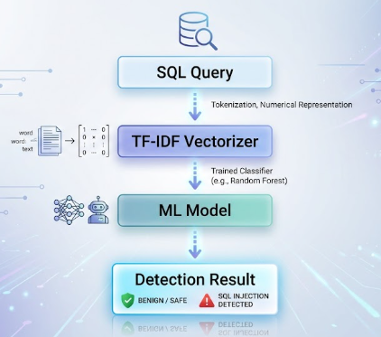
SQL Injection Detection System
Developed an ML-based cybersecurity defense system for detecting SQL Injection attacks using character-level TF-IDF feature extraction and classification models.
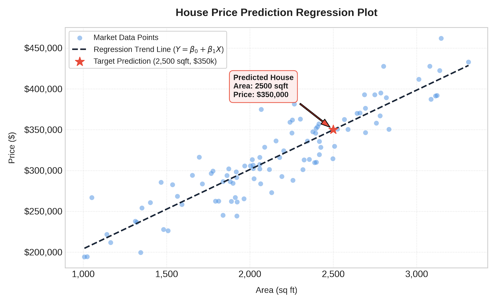
Sales Price Prediction
Developed a Machine Learning regression model to predict house sale prices using data preprocessing, feature engineering, and regression algorithms.
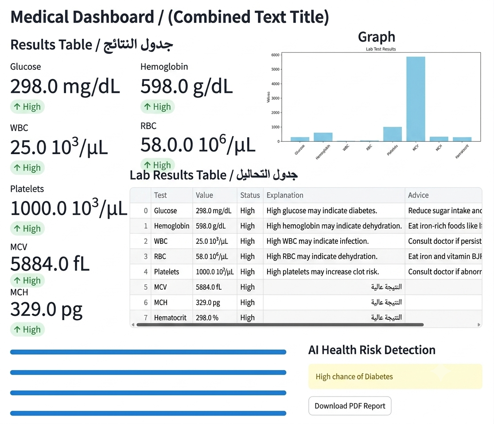
AI Medical Lab Analyzer
Developed an AI-powered application for analyzing medical laboratory data using Machine Learning models and interactive visualization through Streamlit.
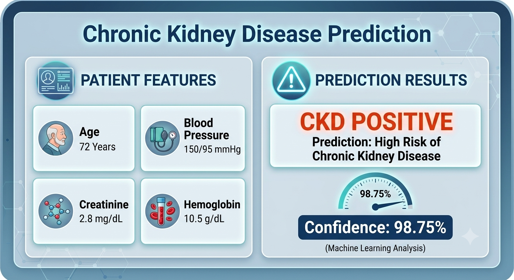
Chronic Kidney Disease Prediction
Developed a Machine Learning classification system for predicting Chronic Kidney Disease using clinical features, preprocessing techniques, and classification models.
ML Engineering & Pipelines
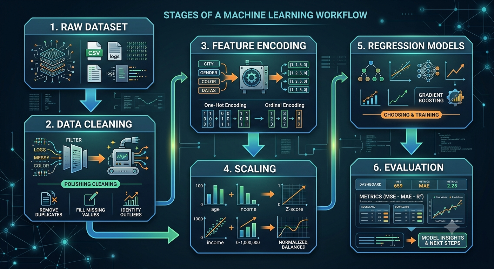
Machine Learning Regression Pipeline
Built a reusable end-to-end Machine Learning pipeline that automates data preprocessing, missing value handling, feature encoding, scaling, model training, and evaluation.
Data Analysis & Analytics
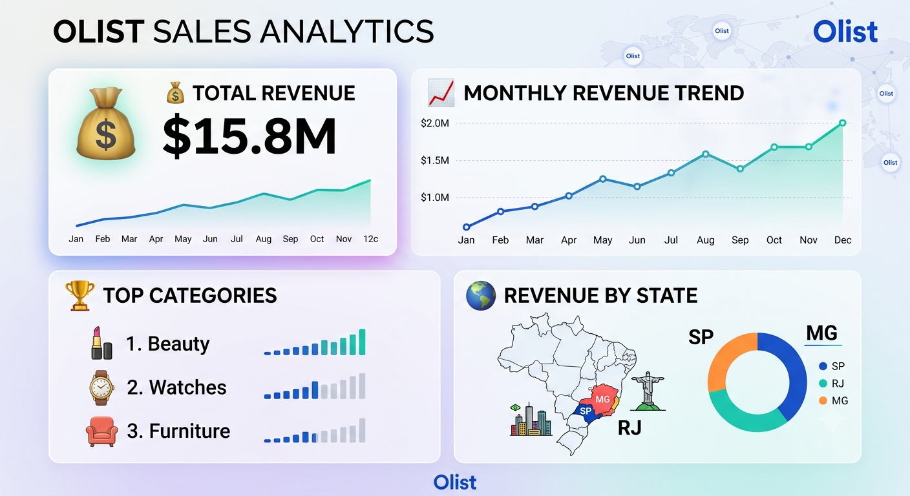
Olist Revenue Sales Analysis
Business analysis of Brazilian e-commerce data to analyze revenue trends, product performance, sales growth, and regional business insights.
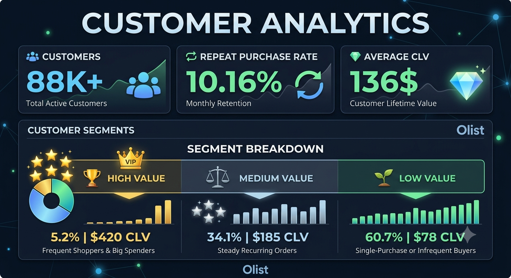
Olist Customer Behavior Analysis
Analyzed customer purchasing patterns, retention behavior, customer lifetime value, and segmentation to discover customer insights and improve business decisions.
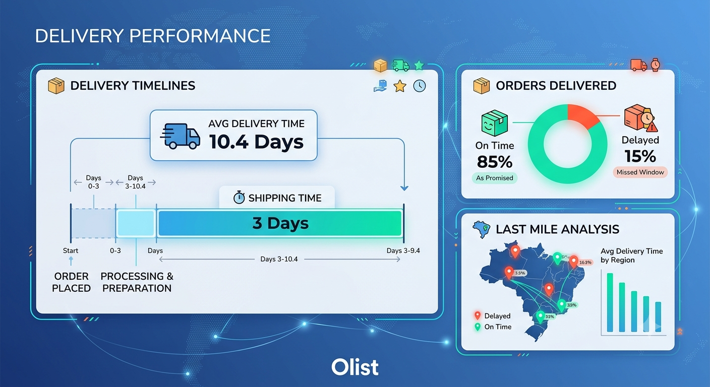
Olist SLA Delivery Analysis
Analyzed e-commerce delivery performance to identify shipping delays, fulfillment efficiency, and factors affecting customer delivery experience.

Global Cybersecurity Threat Analysis
Exploratory Data Analysis project analyzing global cybersecurity incidents, attack trends, targeted industries, financial impact, and threat patterns.
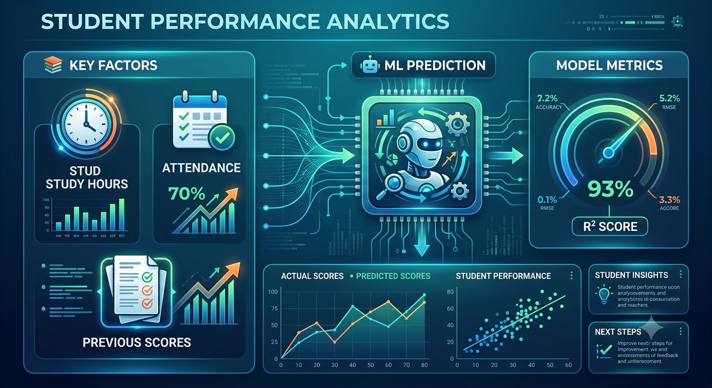
Student Success Analysis
Analyzed student academic data to discover relationships between study habits, attendance, motivation, resources, and academic performance.
Business Intelligence Dashboards
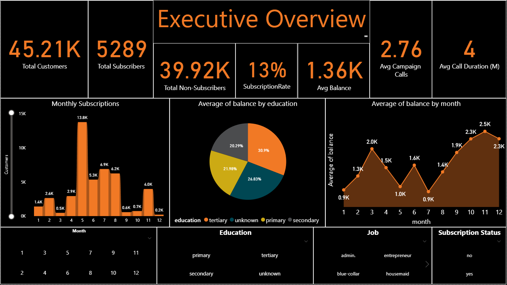
Bank Customer Analysis Dashboard
Built a professional Power BI dashboard to analyze bank customer behavior and marketing campaign performance. The project includes executive KPIs, customer segmentation, subscription analysis, and campaign insights across three interactive dashboard pages, enabling data-driven business decisions.
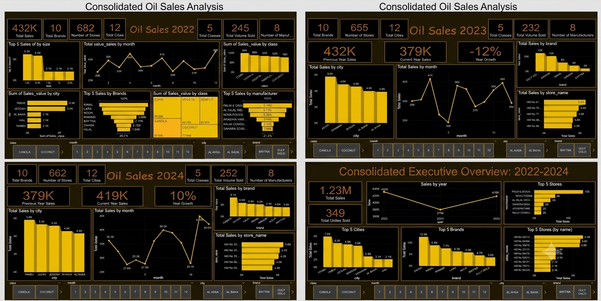
Oil Sales Analytics Dashboard
Developed an interactive Power BI dashboard to analyze retail edible oil sales across Saudi Arabia, providing insights into sales performance, market trends, brand performance, and year-over-year business growth.
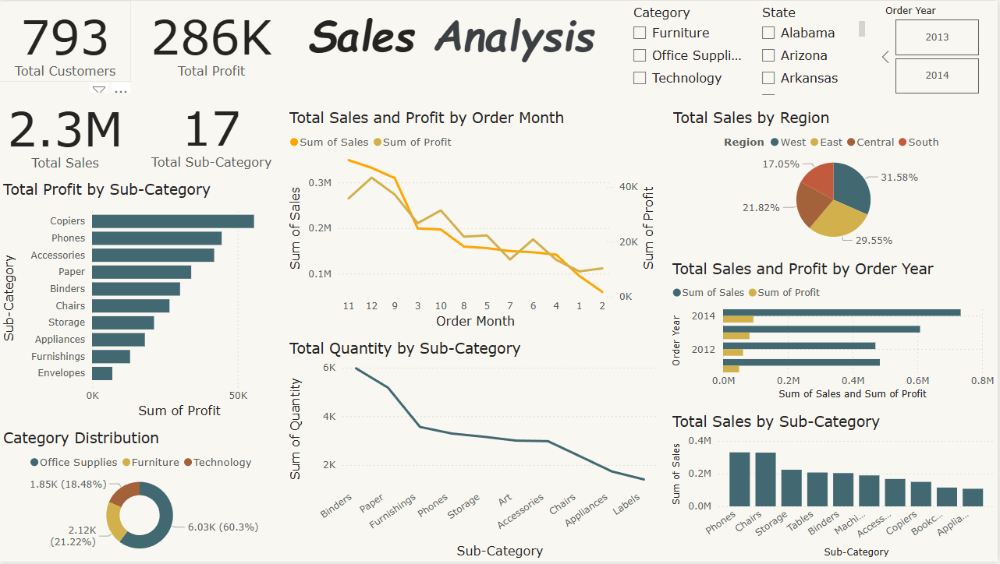
Sales Analysis Dashboard
Built an interactive Power BI dashboard to analyze business sales performance across regions, product categories, and time periods, enabling data-driven decision-making through dynamic visualizations and KPIs.
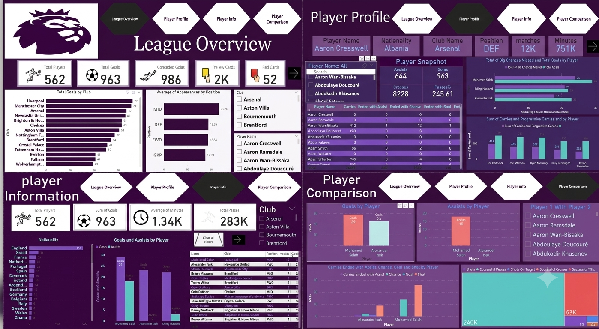
Premier League Analytics Dashboard
Designed an interactive Power BI dashboard analyzing the Premier League 2024–2025 season, featuring league statistics, player performance, radar charts, and head-to-head player comparisons.
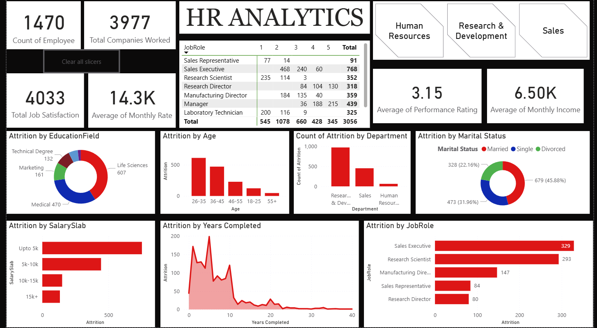
HR Analytics Dashboard
Developed an interactive Power BI dashboard to analyze workforce performance, employee attrition, demographics, and job satisfaction, helping HR teams make informed workforce planning and retention decisions.
Research & Publications
StrikeDefender: An Adaptive Generative AI and Machine Learning Framework for Boolean-Based SQL Injection Defense
Research paper proposing an adaptive cybersecurity defense framework that combines Machine Learning classification, Generative AI, and automated Web Application Firewall rule generation.
- Character-level TF-IDF feature extraction (2-5 grams)
- Machine Learning classifiers: Random Forest, XGBoost, Neural Network
- Generative AI integration for adaptive defense strategies
- Sandbox validation using ModSecurity and OWASP CRS
Trainings
Artificial Intelligence & Applications Training
50 Hours training in Artificial Intelligence applications at Zewail City of Science and Technology.
Artificial Intelligence Diploma
150 Hours AI diploma covering Machine Learning, Deep Learning, Data Science, and practical AI projects at ARRAY Training & Courses Center.
Artificial Intelligence Training Program
90 Hours Artificial Intelligence training program at Information Technology Institute (ITI).
Data Analytics Summer Training
120 Hours training focused on Data Analytics, data processing, visualization, and analytical techniques at National Telecommunication Institute (NTI) & ITIDA.
Generative AI Training
35 Hours training in Generative AI and Deep Learning applications by ITI in collaboration with NVIDIA Deep Learning Institute.
Online Courses & Certifications
Completed multiple online courses in AI, Machine Learning, and Data Science. All details available on LinkedIn.
Certifications
Artificial Intelligence & Applications Training
Zewail City of Science and Technology
Aug 2023 • 50 Hours
Artificial Intelligence Diploma
ARRAY Training & Courses Center
Jul 2024 – Jul 2025 • 150 Hours
Artificial Intelligence Training Program
Information Technology Institute (ITI)
Jul 2025 – Aug 2025 • 90 Hours
Data Analytics Summer Training
National Telecommunication Institute (NTI) & ITIDA
Aug 2025 • 120 Hours
Generative AI Training
ITI × NVIDIA Deep Learning Institute
Jan 2026 – Feb 2026 • 35 Hours
Introduction to Data Science
Cisco Networking Academy
Issued: April 2025
Foundational course covering Data Analytics, Data Engineering, Data Science concepts, and AI/ML career fundamentals.
View CertificateBuild with AI: Masr Edition
Certificate of Attendance
Google for Developers & Information Technology Institute (ITI)
Online Courses & Certifications
Multiple certifications in AI, Machine Learning, Data Science, Power BI, Python, SQL, and Generative AI.
View CertificatesTechnical Skills
Programming
Python
SQL
C++
Java
Machine Learning & AI
Scikit-learn
TensorFlow
PyTorch
XGBoost
OpenCV
Data Science
Pandas
NumPy
Matplotlib
Seaborn
Power BI
Tools
Git & GitHub
FastAPI
Docker
Linux
Languages
Native
B1